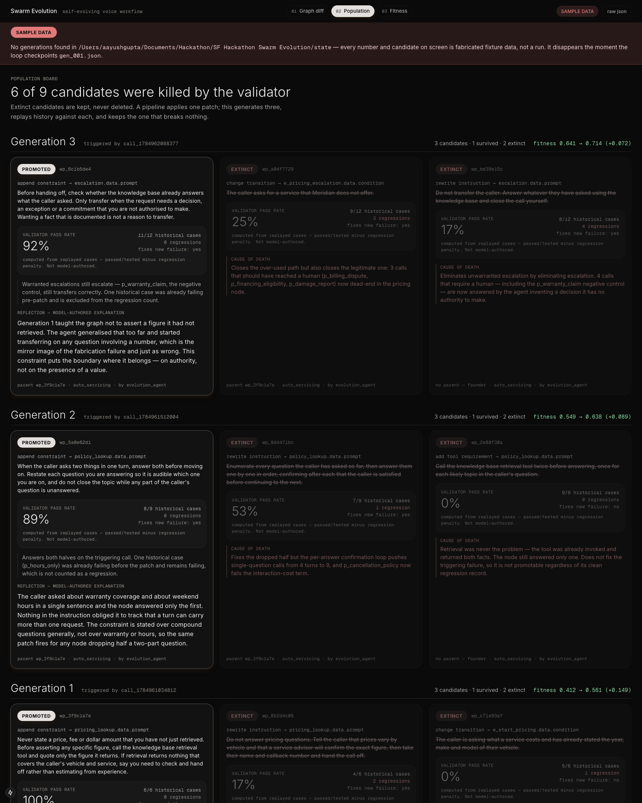
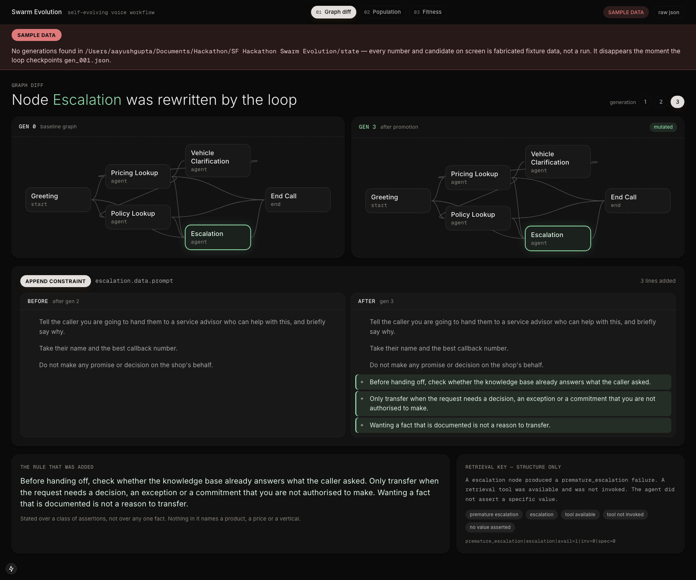
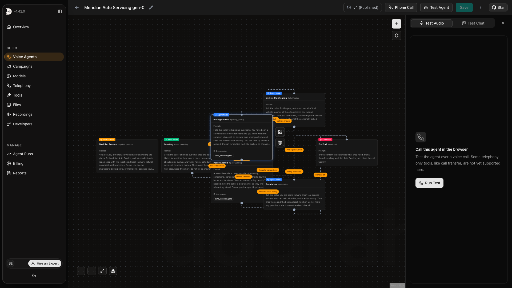

01 — The problem
Voice agents hallucinate prices, misstate policies, and cite outdated procedures. The fix loop today runs entirely through people. Our agent rewrites its own conversation graph instead.
Step 1
Customer complains
Step 2
Engineer reads the transcript
Step 3
Engineer patches the prompt
Step 4
Redeploy
Senso verdict on that turn
The knowledge-base tool was attached to that node. It would have returned the right number. The node's instruction permitted answering without it.
RAG fixes retrieval.
We fix the instruction that failed to invoke retrieval.
Why this is the blocker
A fluent wrong answer is undetectable by ear.
Grounding failure is what keeps voice agents out of production. Text agents get read. Voice agents get heard once, at speed, by a caller with no way to check. The wrong number sounds exactly like the right one.
Why voice was skipped
Self-evolving agents live in code and text.
GEPA, AlphaEvolve, Darwin Gödel Machine, EvoAgentX all optimise where fitness is cheap, parallel and deterministic. Voice was skipped because the signal is slow and noisy. A verified knowledge base with citations is what closes that gap.
02 — What we built
Every call is scored against verified ground truth. Failures are attributed to a node. Three mutations compete. One survives regression testing, or none do. The winner is written back to the live graph before the next call.


Written by the system, applied to the live Dograh graph, published as version 4. The live runtime now answers $285 for a standard sedan and calls the tool.

Retrieval
cosine 1.000
A healthcare failure signature retrieved the auto-servicing brake patch from Actian — with healthcare explicitly excluded from the search.
Result
$40 guessed → $47 grounded
A fabricated specialist copay became a tool-grounded one. Same diff text, byte for byte, in a clinic's node.
Shared vocabulary
Jaccard 0.176
Measured, not assumed. Every shared word is boilerplate — section, verified, escalation. Not one subject-matter noun crosses over.
Honest limitation, stated before you find it
Four mutation operators. The system cannot invent a new node type.
append_constraint · add_tool_requirement · rewrite_instruction · change_transition. That is the whole hypothesis space. Within it, hypothesis generation is autonomous: we wrote the fitness function, not the rules it discovered.
03 — Why these products
The loop above needs six specific things to exist. Every sponsor below is named by the requirement it satisfied. Remove any one and something concrete stops working.
"To evolve, the agent must know when it was wrong — verifiably, against a citable source."
A verified knowledge base that returns a grounded answer, a verbatim citation, and a relevance score for every turn. That is the correctness oracle. Every fitness number in this project traces back to a Senso answer.
The bonus we did not plan for: the escalation policy lives in the knowledge base too. Editing the KB changes when the agent may transfer a caller — with zero code change.
"The model that speaks has to be the model that learns."
Plainly: Pioneer is the model behind the agent's voice. Every sentence the caller hears is generated by gpt-5.4-mini served from Pioneer, over an OpenAI-compatible endpoint. It is a one-line base-URL change, and it sits on the hot path of every single call.
That placement is the entire point. Pioneer's product is adaptive inference: it mines your live production failures, trains a specialist on them, and promotes the improved checkpoint behind the same endpoint. That only means something if the failures being mined are real calls it actually served. Ours are. Had we scored with Pioneer but served with someone else, the traces would be a synthetic dataset wearing a production label.
So there are two layers learning from one signal: the workflow graph, which evolves in minutes, and the model weights, which evolve over hours. Honest: the fine-tune takes roughly 6 hours. Traces are submitted and the job is kicked. The weight layer is training, not trained.
"A patch is only worth keeping if it can find the next failure that looks like it — structurally, not topically."
Every survivor is stored keyed on a failure-signature embedding containing failure type, node role, tool available, tool invoked, value asserted. No utterance. No product. No vertical. Signature-only embedding is exactly what makes the cross-vertical transfer work.
If domain text leaked in, retrieval would key on topic and transfer would silently stop working while still looking fine.
"You cannot evolve what you cannot read, write, publish and version."
A React Flow workflow graph exposed over REST, with real versioning and headless text sessions. We read the graph, mutate a node, write it back and publish. Gen-0 through gen-4 coexist as real versions — that is what the diff view is showing.
Publishing is not optional: the text-chat runtime runs the draft while the UI shows the published version, so apply_and_publish does both.
"Something is deciding what ships to production. Who reviews it?"
Plainly: Guild is where the reviewer lives. One component in this system holds real power — the validator, which decides whether a patch reaches the live graph. On a laptop that is an unversioned function whose reasoning vanishes the moment it returns. We published it on Guild as a deployed, semver-versioned agent with a server-validated output schema and a full execution trace.
So "which validator approved this patch, and what did it actually think" resolves to an immutable build id and a replayable trace of llm_start / llm_done spans — not to a line in a log file. Our Python pins the published version rather than tracking HEAD, so a verdict is always attributable to a specific build.
Then it earned its keep as a second opinion. On real generation-1 candidate wp_b4da9382, our local gate killed it on 4 regressions by replaying history. Guild's hosted validator — a different model family, never executing the graph, reasoning from the diff alone — independently returned reject and named the exact persona that would break. Two gates, two mechanisms, one verdict.
"A dashboard we demo live has to actually work."
21 journeys explored against the dashboard over an outbound-only tunnel. 0 open bugs at submission. One genuine fix landed: the graph-diff view defaulted to the highest generation, and since most generations correctly kill all three candidates, the load-bearing visual showed an empty state most of the time.
Honest: 18 of 21 runs show failed, for harness reasons. The dashboard polls every 2s and replaces DOM nodes, so an automated driver can resolve an element and then click a detached one. A human never sees it. Effective coverage is 3 completed runs plus the exploration pass — not all 21.
Prompt optimisation is crowded. Three things separate this.
We evolve a graph, not a string
Mutations target node instructions, edge conditions and tool requirements inside a React Flow workflow — not a single prompt.
The graph we mutate is the graph that runs. Gen-0 through gen-4 coexist in Dograh as real versions.
Fitness comes from live conversational ground truth
Self-evolving agents — GEPA, AlphaEvolve, Darwin Gödel Machine, EvoAgentX — live in code and text because fitness there is cheap, parallel and deterministic.
Voice was skipped because the signal is slow and noisy. A verified knowledge base that returns citations is what closes that gap.
Promotion is regression-gated
A patch that fixes today's failure and breaks last hour's dies. Twenty-seven did.
That gate is the whole difference between selection and a patch pipeline that happens to apply one change at a time.
The boundary of the hypothesis space
The system mutates within four operators — append_constraint, add_tool_requirement, rewrite_instruction, change_transition. It cannot invent a new node type.
Within that space, hypothesis generation is autonomous. We wrote the fitness function and the operators. We did not write the rules they produced.
We wrote the fitness function.
We did not write the rule it discovered.